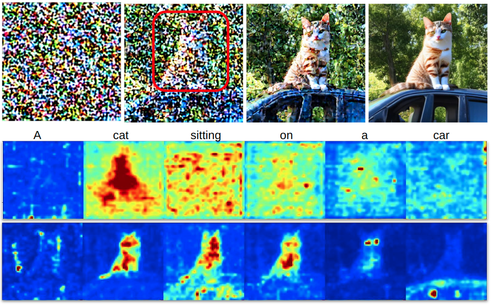
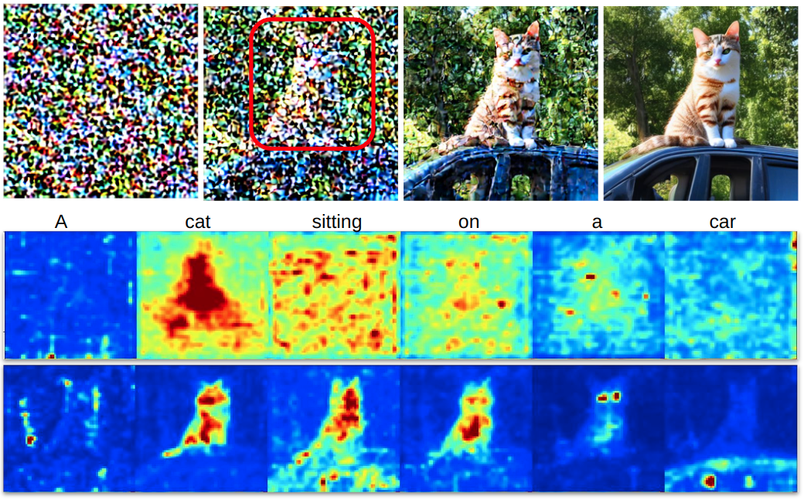

Background
There are notable issues regarding scene composition in Stable Diffusion (SD). First of all, it is difficult to individually control different objects' appearance using the prompt. Second, it is not possible to control an object's location using the prompt.
Our work provides a method to direct object location in images generated with Stable Diffusion. This is achieved without any training or fine-tuning.
DD builds on the following observation: The overall position and shape of a synthesized objects appears near the beginning of the diffusion denoising process, while the final steps do not change this but keep refining the details.
 


Approach
DD can be divided into two stages: Attention Editing and Convention SD Denoising. In the Attention Editing stage, DD directs object position by manipulating activation in the text guidance cross-attention layers.
Attention Editing directly strengthens and weakens the activations in a specified region of selected cross-attention maps . Trailing attention maps are those that do not correspond to words in the prompt. These play a central role in establishing consistency between the subjects and the surrounding environment shown in the image. A selected number of trailing attention maps are edited in a similar way to the edits on the prompt attention maps.
Key Results - Four quadrants
In each row one of the objects (sun, dog, diver) is placed in one of the four quadrants of the image (top right, top left, bottom right, bottom left).
Key Results - Sliding window
Here one of the objects (cat, stone castle, dog) is moved from left to right across the images.
Key Results - Two bounding boxes
"Compositionality" is a well known failure case for SD, e.g. the Huggingface page specifically mentions the example of “A red cube on top of a blue sphere”. Here we use DD to successfully produce this example, by using two bounding boxes for the sphere and cube respectively.
Contribution
We summarize the contributions of Directed Diffusion:
- Storytelling: Our method is a first step towards storytelling by providing consistent control over the positioning of multiple objects.
- Compositionality: It provides an alternate and direct approach to ''compositionality'' by providing explicit positional control.
- Consistency: The positioned objects seamlessly and consistently fit in the environment with natural lighting, cast shadows, etc., rather than appearing as a splice from another image.
- Simplicity: Our method requires no fine tuning or other optimization, and can be added to an existing text-driven diffusion model with cross-attention guidance with only a few lines of code.
Limitations
While Directed Diffusion can be used to address Stable Diffusion's problem with composing multiple objects, it inherits Stable Diffusion's other limitations -- in particular the need for experimentation with prompts and hyperparameters. "This is the thing with AI tools right now - it takes a ton of time and a willingness to keep experimenting." In practice our method would be used in conjunction with other algorithms such as Dreambooth. The examples in the paper do not make use of these other algorithms in order to provide a stand-alone evaluation of our algorithm.
Societal Impact
The aim of this project is to extend the capability of text-to-image models to visual storytelling. In common with most other technologies, there is potential for misuse. In particular, generative models reflect the biases of their training data, and there is a risk that malicious parties can use text-to-image methods to generate misleading images. The authors believe that it is important that these risks be addressed. This might be done by penalizing malicious behavior though the introduction of appropriate laws, or by limiting the capabilities of generative models to serve this behavior.
Code (NEW)
Our DD implementation has released (link). Additionally, we also release an online demo app on Huggingface Space running on A10 GPU (link). Feel free to contact us if you have comments and suggestions!
Citation
For more details and additional results, read the full paper.
@misc{ma2023directed,
title={Directed Diffusion: Direct Control of Object Placement through Attention Guidance},
author={Wan-Duo Kurt Ma and J. P. Lewis and W. Bastiaan Kleijn and Thomas Leung},
year={2023},
eprint={2302.13153},
archivePrefix={arXiv},
primaryClass={cs.CV}
}